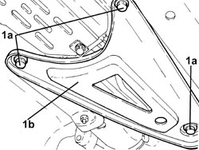
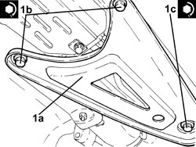

4410D16 BRACKET (ONE) RETAINING CHASSIS TO BODY - R R
- Path
- Procedures > 44 SUSPENSION AND WHEELS > 4410 FRONT SUSPENSION > 4410D FRAME AND CROSSMEMBER > 4410D16 BRACKET (ONE) RETAINING CHASSIS TO BODY - R R
- Kind
- repair procedure (removal / refitting; the operation number is the code)
- Applies to
- all engines; all production periods
- Interactive page
- https://sloeber94.github.io/elrnDB-fCrm/en/#/194000548
Applies to: all engines; all production periods
 Removing
Removing
 Refitting
Refitting- Position the vehicle on a lift.
1. Undo the fixing bolts (1a) and remove the bracket securing the frame to the body (1b).

Applies to: all engines; all production periods
Refitting
Removing1. Position the bracket securing the frame to the body (1a) in its housing and secure it tightening the bolts (1b) and (1c) to the recommended torque.
Component | Fastening | dia | Value (daNm) | Validity |
|---|---|---|---|---|
Underbody reinforcements | Inner bolt (to replace) | M12 | (bodyshell side) 8.1 - 9.9 + 45° |
Component | Fastening | dia | Value (daNm) | Validity |
|---|---|---|---|---|
Underbody reinforcements | Outer bolt (to replace) | M10 | (bodyshell side) 5.0 - 6.1 + 45° |
Component | Fastening | dia | Value (daNm) | Validity |
|---|---|---|---|---|
Underbody reinforcements | Bolt (to be replaced) | M12 | (front suspension frame side) 9.0 - 11.0 + 90° |

Applies to: all engines; all production periods
Topics that link to this page (13)
- 1016C10 SINGLE CYLINDER HEAD - R.R. AND REPLACE GASKET
- 1020D14 FRONT CRANKSHAFT OIL SEAL COVER - R.R AND REPLACE SEALS FOR VERSIONS WITH OIL PUMP ON CRANKSHAFT, TIMING SIDE
- 1020D18 FRONT CRANKSHAFT COVER OIL SEAL - R.R.
- 1032B10 TOOTHED TIMING BELT - R + R FOR TIMING ADJUSTMENT OR REPLACEMENT
- 1032C42 TIMING BELT TENSIONER SUPPORT - R.R
- 1036L10 CAMSHAFTS IN CAMSHAFT HOUSING - R.R. - INCLUDES CAMSHAFT HOUSING REPLACEMENT IF NECESSARY
- 1036L30 FRONT OIL SEAL FOR CAMSHAFT IN CAMSHAFT HOUSING - REPLACE
- 1040B34 INTERMEDIATE FUEL DELIVERY HOSE - R.R.
- 1040B55 INTERMEDIATE FUEL RETURN PIPE - R.R.
- 1060E10 DIESEL INJECTION PRESSURE PUMP - R.R.
- 1060E30 PRESSURE PUMP DRIVE PULLEY - R.R.
- 1060E40 PRESSURE PUMP SUPPORT - R.R.
- 1072B10 INLET MANIFOLD - R + R AND REPLACE SEAL